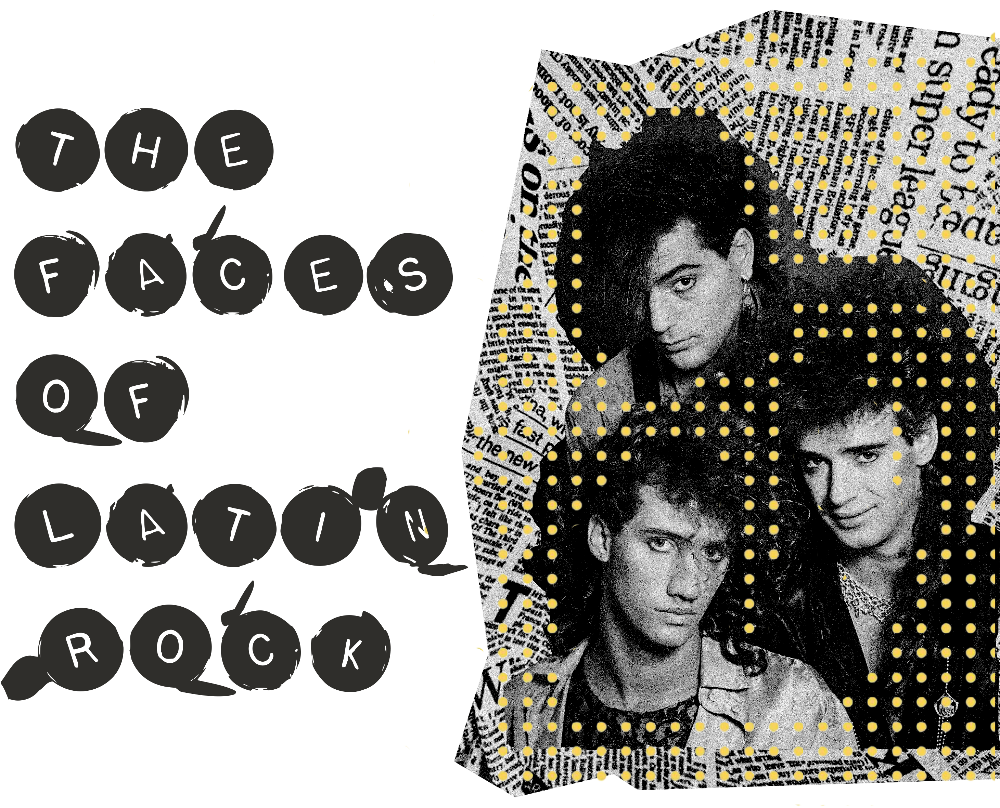
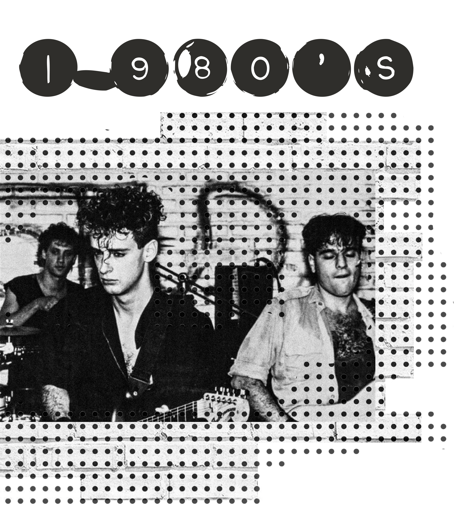
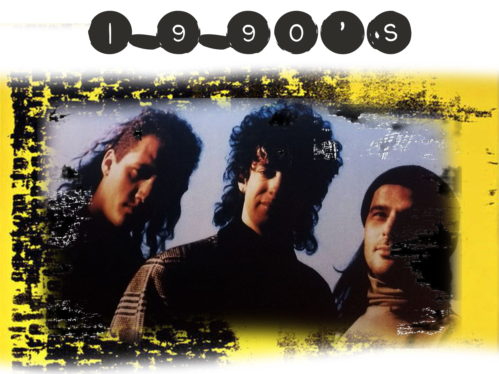
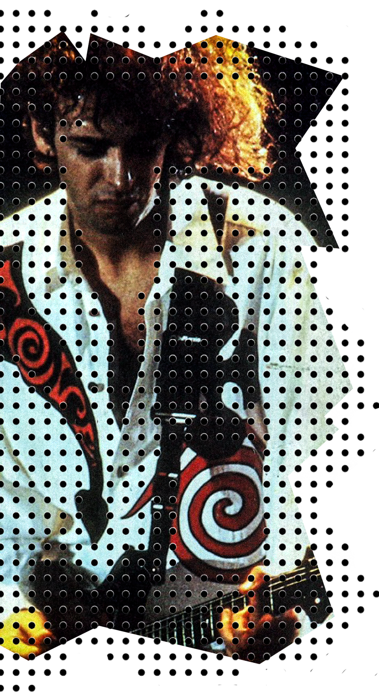
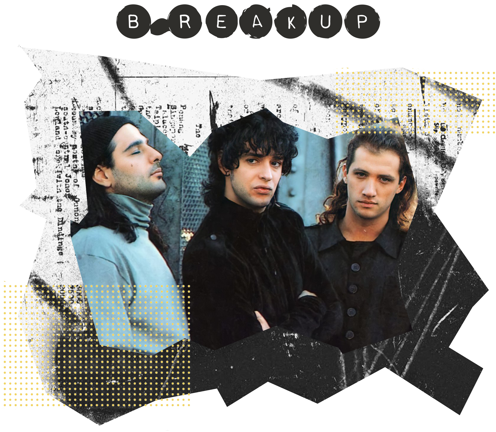
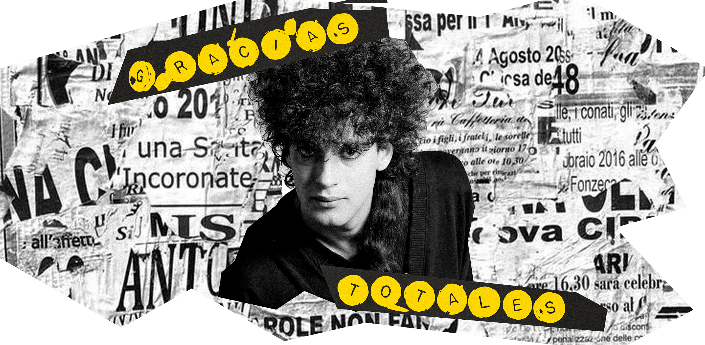

In Punta del Este, Uruguay, 1982, a 22 years old Gustavo Cerati met Hector Bosio by chance, being young members of different travelling bands. After forming a strong musical bond, and Cerati’s other projects not meeting his expectations, they decided to collaborate.
Meanwhile in Buenos Aires, Argentina, Cerati’s sister was being asked out by Carlos Ficicchia, who she had rejected multiple times. One of Carlo’s calls was eventually caught by Cerati, who gained interest in him after learning he was a drummer and hearing him play.

With Cerati on main vocals and guitar, Bosio in bass, and Carlos aka “Charly” in drums, Los Estereotipos (The Stereotypes) came to be. The same year, after realizing bands called “The” were too common, the name “Soda Stereo” came to be as Cerati would often drink soda.

In 1983, during a show at Club Zero, Soda caught the eye of Argentinian rock producer and “talent hunter” Horacio Martinez. Horacio signed Soda to the Rodríguez Ares management agency and introduced them to CBS.
Their first two albums and shows made people notice their presence and the new sounds they wanted to explore.
In 1986 Soda Stereo realized their first full Latin American tour. Soda arrival in Perú revolutionized the market, as at that time Latin American Rock was not that popular outside of Argentina and Uruguay, and rock bands were not accustomed to international tours.
In early 1987 Soda staged a triumphant return to the Viña del Mar International Song Festival in Chile where they were awarded with the “Premio Antorcha de Plata” (Silver Torch prize). The festival was broadcast across Latin America, expanding their fame.
After two more album, one of them recorded in the US, and the platform they had gained in less than a decade, Soda expanded beyond Latin America, going to Mexico and Los Angeles in their second tour, becoming the second Argentinian Rock en Español band to play in the US, following Miguel Mateos.

In early 1990 Soda co-headlined a show with Tears for Fears at the Jose Amalfitani Stadium in Buenos Aires. Following the show Soda began work on their 5th studio album, recorded at Criterion Studios in Miami, Florida. Soda was aided by longtime collaborators; Daniel Melero, Andrea Álvarez, and Tweety González.
The album “Cancion Animal” was a departure from the Soda’s work in the 80’s. Preceding rock elements that defined the 90’s, it’s considered by many to be Soda’s masterpiece. It is arguably one of the best Latin American rock albums of all time.
By late 1991 Soda’s success brought the band to the attention of MTV Europe who had their eye on Latin America, particularly on the burgeoning Rock en Español scene. MTV dedicated a whole show to Soda Stereo, a first for a non-English band.

After the difficult release of their sixth album and the end of the band’s collaboration with Sony in January 1993, Soda began their sixth tour of Latin America, visiting Chile, Mexico, Paraguay, and Venezuela. The trio decided to take a break that year, which fueled rumors of a break up. There had been talks of dates in the United States, Spain and other countries, but diverse factors during late 1993 and early 1994 forced the group to take a “rest” from Soda Stereo.
After a three year absence, on June 29, 1995, Soda released their 7th and final studio album. The album was an instant hit in Argentina and Latin America, reaching platinum status in Argentina 15 days after its release. The album became the axis for the extensive Sueño Stereo tour which included four U.S. dates; Los Angeles, Chicago, New York and Miami.
In May 1997 Soda officially announced their separation through a press release. The Argentinian daily Clarín devoted a large front-page spread to the breakup.

The band embarked on a farewell tour, making stops in Chile, Mexico, and Venezuela. Their last concert took place on the 20th of September at the River Plate Stadium in Buenos Aires.
The show ended with Soda’s biggest hit, “De música ligera” and a memorable farewell by Cerati “¡Gracias totales!” (“Total thanks!”)
